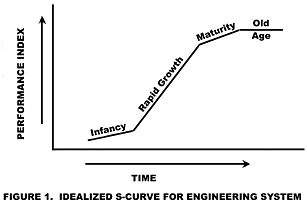
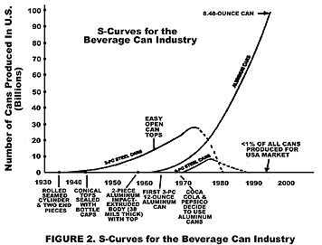
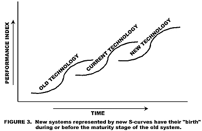
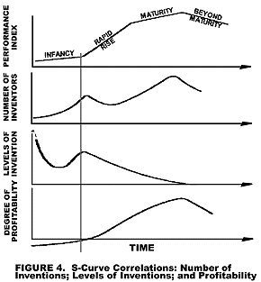

Julian Blosiu, Jet Propulsion Laboratories, Pasadena, CA
James Kowalick, Renaissance Leadership Institute, Apollo, CA
"AHA !" . . . . . and suddenly, an invention is born. The inventor finds an original and unexpected solution to a problem. Asked how he arrived at the invention, the inventor is unable to explain. When he does offer an explanation, he attributes it to chance, luck, sudden enlightenment, or divine inspiration. Inventing is a slow process performed only by relative few persons. The last 1000 years produced no really significant changes in the productivity of creative thinking. Yet the commercial demand for innovation is clear: an organization that has the lead in cutting edge technologies, can rapidly develop new products and introduce them into the global marketplace. The ability to do this is a matter of business survival.
The business world has been ready for any revolutionary new approach that significantly increases the pace of invention and innovation. One such revolution was ignited fifty years ago by Genrich S. Altschuller, a brilliant Russian inventor and creative thinker. Altschuller was granted his first patent at the age of 15, and by the time he was 30, he had already published over 20 books and 350 technical papers. In 1946, Altshuller conceptualized his Theory of Inventive Problem Solving (TIPS), more popularly known as TRIZ, its Russian acronym. This theory was the beginning of a true science of invention and creativity
The TRIZ approach was further extended and used by thousands of engineers and inventors all over the former Soviet Union, and more recently was adopted in Europe, Japan and Israel. Leading U. S companies and institutions are now acclaiming this new innovative problem solving tool as the conceptual breakthrough of the future. Motorola, Ford Motor Company, Procter and Gamble, Anheuser Busch, Jet Propulsion Laboratory and others have one thing in common; they have all embarked on training and education workshops and are applying or beginning to apply TRIZ methodology. For engineers and designers, the task of employing TRIZ is facilitated by availablity of three expert-system software programs provided by the Invention Machine Corporation. These systems combine artificial intelligence with Altshuller's TRIZ theory. Practitioners have demonstrated that by using TRIZ, their productivity in generating new inventive solutions can be improved by an order of magnitude. Marketplace realities are changing faster than new practical ideas can be generated. The need for generating new products is driven by a hunger to keep up with what competitors are doing, and to satisfy customers' diverse and ever-changing needs. TRIZ fills the gap for rapid, new technology development. Knowledge of it is becoming a mandatory requirement for a company or institution to survive.
WHY IS IT SO DIFFICULT TO INVENT?
"NOTHING CHANGES FASTER THAN CHANGE ITSELF." Before a viable inventive problem solution can be provided, the engineer or inventor has to overcome numerous obstacles. One of the first obstacles is "psychological inertia." Many of us know this phenomenon as "paradigm paralysis." The entrenched belief is that only a select few have natural-born creative capability, and therefore inventiveness cannot be something that can be learned or taught. But we can learn how to drive a car, to read and write, and to understand the stock market trends and to forecast tendencies. All of this learning is performed despite the fact that not all of us are extremely talented, or even wise. Why not have every engineer learn how to become more inventive? This is precisely what TRIZ will do. Acquiring an understanding of TRIZ enables an engineer to quickly and inventively solve difficult technical problems. The results are production-ready systems. Psychological inertia includes a variety of diverse factors, from fear of entering an unknown technical field, to a reluctance to elaborate on an idea that could be interpreted by others as childish or strange. Some might view the apprehension of deep knowledge of new elementary principles of invention as a liability instead of an asset, because they could generate outrageous, unheard of, unrealistic or extravagant new solutions and ideas that others might think to be laughable. TRIZ is an approach that takes the inventor out of his "box" of limited thinking, into a world of high-level or inventive thinking. The inventive environment must strongly support this by the same rule used in brainstorming: criticism is forbidden.
STAGES OF EVOLUTION OF TECHNICAL SYSTEMS
"REVOLUTION THROUGH EVOLUTION." All engineering products undergo an evolution from infancy through old age. Any new technical system that has just been "invented" will undergo a natural system life evolution that would follow an S-curve profile shown in Figure 1. There are four stages of evolution that each engineering product evolves through: infancy, rapid growth, maturity, and old age.
FIGURE 1

The S-curve can be idealized by straight lines that represent the four stages of an engineering system's life cycle. Let's consider the life cycle of the metal beverage can industry development as an illustration. Figure 2 describes the production history of the beverage can. First, there was the 2-piece steel can whose time came and vanished. This technology went through all four stages of development. During the infancy stage the "performance index" was quite low. In order for the 2-piece steel can technology to reach the stage where the performance index was improved for the production to take off, many innovative improvements were needed. This was the period of RAPID GROWTH. However, at some point in time around 1975, the inventive improvements reached their limits when the MATURITY phase of technology development was reached. This represented the peak of the S-curve. After this point, due to harmful or degrading effects which usually accompany main functions, further improvements did not improve the performance index; rather they lowered it. This is the OLD AGE stage of the 2-piece steel can, or the degradation phase. What happens to technologies whose "time has come?" They become obsolete and will be replaced by other inventive and revolutionary technologies. Figure 2 also provides a graphical description of the new aluminum can technology that started in the late 1950's and replaced the old 2-piece steel can technology. This new technology is still in the RAPID GROWTH phase, with over 100 billion aluminum cans produced annually. Almost in parallel with this rapid growth, a 3-piece steel can technology emerged, but with little success. Today, less than 1% of total USA can production uses 3-piece steel can technology.
FIGURE 2

Figure 3 provides a generic graphical description of an "old technology", a "current technology", and even a "Future technology" that we can now predict. With this chart and the example of the beverage can industry development, we are able to forecast that there always will be a future technology development that will replace current technology - a very powerful and insightful knowledge indeed. Automobiles have replaced the horse-buggies; for very long and intercontinental travel, automobiles have been replaced by planes; for outer space, around-the-world travels, space-shuttles will be replacing planes; and so on. Examples of old technologies being replaced by new technologies are everywhere. Observing the technology evolution pattern, Altschuller conceptualized the laws of technological evolution, and initiated the revolution of the science of systematic innovation and the creative process.
FIGURE 3

NOT ALL INVENTIONS ARE EQUAL
"NOT ALL PROBLEMS ARE EQUAL." Inventions can be divided into five different categories, based on the level of inventive quality associated with the difficulty of the problem to be solved. What makes one problem an easy one to solve, and another so difficult? The answer to this question is related to how easy it is to find a solution, how many trials were needed to get to the solution, and where the solution came from. There are five levels of inventions. The table below describes these levels and the criteria of distinction.
TABLE OF LEVELS OF INVENTIONS AND PROBLEMS
For each engineering system, a correlation exists between the four stages of development of the system and (1) the number of inventions; (2) the levels of these inventions; and (3) the degree of profitability of the technology at the given life cycle phase. Figure 4 displays graphically these relations. All companies need to pay attention and identify where their products and associated technologies are on the S-curve. Knowing this will provide information on where and when to invest research and development resources for a maximum return. As an example, the driving force orf the rapid technology development of metal beverage cans was the cost of beverage can production. Aluminum can production took off only when the price of aluminum became competitive to steel. A one-cent/can reduction of aluminum can production cost could drive a competitor out of business. So what is there to be done? One obvious solution is to reduce the amount of aluminum in a can. Notice in Figure 3 that the current weight of the present aluminum can is already less than 6.48 ounces. To be competitive, this weight has to be further decreased. On the other hand, the aluminum can has to support over 90 pounds of staking pressure and resist large variations of temperature. The challenge for new inventions is to further reduce the weight of the beverage can.
FIGURE 4

WHAT IS TRIZ?
"INNOVATE OR DISAPPEAR" is a slogan frequently heard today. The road toward scientific theory is often long and difficult. TRIZ is the product of 50 years of effort to structure the process of intention and innovation. TRIZ is part of an analytical discipline for creative problem solving. Its use overcomes psychological inertia and addresses basic engineering contradictions. It is a step-by-step approach to quickly, efficiently and creatively achieving breakthrough concepts. It offers a revolutionary and systematic knowledge-based way of thinking. With TRIZ, an engineer's knowledge, creativity and problem-solving skills, for generating inventive solutions to difficult problems, is significantly enhanced.
Altshuller began his quest for a process of creativity by analyzing over 400,000 patents and inventive solutions from different fields of engineering. He discovered that the evolution of engineering systems is not a random process; rather, it is governed by objective laws. There are eight formulated Laws of Engineering System Evolution. These laws are used to guide engineers in their efforts to solve technical problems. TRIZ is governed by these laws and is divided into three subsystems: (1) The Algorithm for the Solution of Inventive Problems (ARIZ is the Russian acronym for this algorithm); (2) Standard Solution Paths to Inventive Problems; and (3) a database of effects of physics, chemistry and geometry.
THE EIGHT FORMULATED LAWS OF ENGINEERING SYSTEM EVOLUTION
THE ART OF INVENTION IS IN FACT A SCIENCE!" Any science is governed by laws. When it was realized that what was formerly called the "art of invention" is subject to certain fixed laws of evolution, invention became a "science". These laws were discovered during the evaluation and analysis of thousands of world patents. Using these laws, one can predict the next step in the development of a technical system whether it be a product or process. TRIZ's capability to predict the next-generation for any technical system is a unique form of technology forecasting. Most of these next-generation systems are patentable, and they can be used to establish a corporate patent umbrella that (1) offers protection to a company's intellectual property, and (2) enables a company to maintain market lead over years and decades. How? The company already owns the invented next-generation concept, and simply holds it aside for the appropriate market introduction time. That time may occur when just as a competitor appears to be gaining the market advantage, or when customers demand more and better features and functions.
What are these laws that govern engineering system evolution? Altschuller and his followers concluded that the laws governing the development of technical systems are divided into three categories: Static, Cinematic and Dynamic. Using the beverage can as an example, it is possible to illustrate the application of these laws.
STATIC LAWS l) Completeness of Parts of the Engineering System. Every technical system includes four basic parts. The system will not work if one of these parts is missing, or does not perform well. The generic names of these parts are the ENGINE, the TRANSMISSION, the LIMBS, and the CONTROLS. The engine is the source of energy. The transmission carries the energy from the engine to the part that does the work. The "working" part that does the work is called the limb. The part that controls the system as a whole is called the controls or control system. For an automobile, these four parts are readily understood.
But how does this law apply to aluminum beverage cans? The three drops of liquid nitrogen added to the beverage to create an inner pressure in the can act as an ENGINE. The internal pressure, in the form of gaseous nitrogen, serves as the TRANSMISSION - transmitting force to the can walls. The can walls do the work,supporting any "stacking" load above them. The walls represent the LIMBS of the beverage can system. They would not be effective limbs if they were not stiffened. They become stiffened when they are internally expanded by the high-pressure nitrogen. In a sense, the CONTROLS have been designed into this system as "self-controls." The internal domb on the bottom of the can, as well as the can wall itself, yield somewhat when the internal pressure changes. These four parts of the beverage can system are all important relative to their function: supporting a stacking load.
The opener on the lid of the can is an important part, but it is connected with a different function: opening the can so the can contents can be consumed. For this function also, there are four parts. It is left to the reader to consider what these four parts are for the "opening the beverage can" function. It is sometimes difficult to identify these four parts to a particular engineering system, for a particular function. The difficulty arises due to insufficient practice in "systems" thinking."
2) Energy Conductivity of a System. All technical systems must possess the capability for easy energy transfer throughout the system. The energy must transfer reliably and flawlessly from the engine via the transmission to the working limbs and controlling organs. Energy transfer from one part of a system to another can be performed by a SUBSTANCE (lever, shaft, gear), a FIELD (gravitational, magnetic, electric), or a SUBSTANCE-FIELD (charged particles, magnetic fluid, luminescent fluid). For a beverage can, energy is readily and inexpensively transferred by the pressurized nitrogen gas.
3) Harmonizing the rhythms of parts of the systems. An essential condition for good system performance is to establish harmony in operation between all system parts and components. This includes harmony in timing, harmony among the various frequencies in the system, harmony in vibration,and harmony in the rhythm of the system.
The internally created pressure in the aluminum can, the can wall thickness, and the strength of the pre-formed opener on the lid all need to be in "harmony" (i.e., harmonius relationships) for the system to operate well in spite of the challenges: e.g., the design must provide enough strength to support the 90 pound stacking load from above. This condition represents a rather fine tuned equilibrium. The challenge facing the inventor is to reduce the aluminum content of the can without disturbing this fine tuned equilibrium among the aluminum can components.
ClNEMATlC LAWS 4) Ideality. All engineering systems evolve in the direction of increasing ideality. The lower the cost for a system to perform, the more: ideal the system. An ideal system requires no energy to perform its operation, has no weight, has no volume, costs nothing to produce, but performs its specified function. In actual practice, systems move towards ideality when functional performance improves as costs decrease. Today's aluminum can has a wall thickness approximately equal to the thickness of two sheets of copy paper. Beating the competition means moving towards the ideal system while lowering costs (e.g., of the aluminum can design and its production). For beverage cans, this implies a further reduction of the weight of the can.
5) Uneven System Parts Development. Within any new technical system, or even in most existing technical systems, the four major parts of Law # 1 have not been evenly developed. Often the first indication of an unbalanced system is system complication. Generally speaking, the more complicated a system is, the more uneven is the development of its parts. Uneven parts development means that technical and physical contradictions exist. The corollary is that there are inventive and marketplace opportunities. Take "yesterday's" beverage can, with the many patented inventive solutions to the problem of opening the can. Until the present tab opener, no opener design satisfied the dual requirements of being easy to open and easy and safe to consume. The opportunity was always there, but it took decades for today's inventive solution to be discovered.
6) Transition to a Super-System. After all possibilities for further system development have been exhausted, the next step is to develop a super-system. In the case of the 2-piece steel can, a natural tendency was to evolve to a more complicated system such as a 3-piece steel can. The aluminum industry won out, but with a similar although better design. What is the "super-system" for a beverage can? What system includes a beverage can (or its contents)? One is the lower-cost, large, pressurized plastic container, which industry observers say satisfies the "containing" and "stacking" functions on a higher level. Of course, a new problem is introduced by this super-system: lack of compactability and (to a relative degree) portability.
The question, "What does the super-system look like?" has no easy answer, but when a right answer is found, it can represent an innovative and marketplace breakthrough. Consider the glass cutting and trimming process. Glass breakage in trimming and polishing the corners of thin, rectangular glass plates is exceptionally frequent; the "super-system" for this represents stacks of glass plates. Breakage levels on stacks of plates are low. Using the super-system not only reduced breakage levels, but also significantly increased productivity of the operation.
DYNAMIC LAWS 7) Transition from Macrolevel to Microlevel. This law reflects the tendency for evolution of the technical systems in the direction of miniaturization of system component, such as micro electronics, micro instruments, and mini and micro spacecraft. We need only to remember how difficult it was to open the old metal cans (using a knife or a specialized can opener) and how easy it is today, with only a twist of a finger.
8) Dynamization. This law is also a reflection of the tendency of modern technology evolution to move from a rigid structure to a more adaptive and flexible one. This increases the components' degree of dispersion and number of connections, and the responsiveness of the system. Once again, the rigid steel can was replaced with the very thin flexible wall of the aluminum can.
CONFLICTS AND CONTRADICTIONS:
ADMINISTRATIVE, TECHNICAL AND PHYSICAL
"NECESSITY IS THE MOTHER OF ALL INVENTIONS!" Invention is the result of a process through which a given problem is solved in a way never solved before. The requirement of any inventive problem is to improve one characteristic of the system without impairing the other characteristics of the same system. If a contradiction appears, it is necessary to remove the conflict-causing elment(s). Once the contradiction is eliminated, the problem is solved.
There are three levels of conflicts and contradictions: Administrative, Technical and Physical. Administrative Conflicts are the obvious contradictions stated in the general system description. These conflicts are non-technical in nature. They usually refer to cost, time, and other resources. For the aluminum can industry, to beat the competitors, the production cost of the aluminum can needs to be continuously reduced. Towards this purpose, can weight needs to be reduced, but this requires the use of many corporate resources - hence the administrative conflict.
Technical Conflicts appear when an improvement of one characteristic worsens the performance of another characteristic of the system. A technical conflict often involves two characteristics of a system. If we reduce can wall thickness, can stacking-load strength (to support the load of other cans stacked above a given can) would worsen, as well as bursting resistance of the wall at high-temperature storage.
Physical Contradictions are the causes behind technical conflicts. A physical contradiction appears when contradictory requirements are placed on just one element, or object, of the technical system. For instance, the can wall should be thick and thin: thick to support stacking load and to have a high burst pressure, and thin to reduce can weight. The challenge for a new invention (can design) is to remove the physical contradiction, which means solving the problem with a new design.
STANDARD FEATURES AND INVENTIVE PRINCIPLES
"NO CONFLICT, NO INVENTION" Altschuller and his associates observed that there are 39 "Standard Features," - standardized names for the many thousands of parameters that engineers, scientists and technical professionals use to describe a technical system. They also observed that there are only 40 Inventive Principles behind all existing patents, and that these principles address each of the 1,521 possible standard technical conflicts that are possible (39 times 39). In other words, for each conflict between two standard features, there are one or more inventive principles that serve as a generic solutions.
A designer or problem-solver first formulates the problem in the form of a technical conflict. Next, this technical conflict is transformed into a "standard" technical conflict (i.e., using two of the standard features). Formulation of the problem in "conflict" form, means that if the initial problem were solved by changing one parameter (or standard feature), some other parameter (or standard feature) would then become worse. The inventive principle that serves as a solution to any standard-feature conflict is already known, because this was researched by Altschuller and his associates.
The same generic solutions (via one or more of the inventive principles) apply to the same standard-feature conflicts, no matter in what engineering discipline or technology the conflict exists. For an aluminum beverage can, there is a technical conflict between wall thickness and strength. Two standard features which describe these conflicting parameters are LENGTH (standard feature #4) and STRENGTH (standard feature # 14). When these two standard features clash (i.e., when solving a problem by improving a dimension, or length, introduces a new problem with strength), there are four inventive principles that can be used to come up with solutions, some of which may be patentable. The four applicable principles are "Principle of Dynamics - # 15;" "Principle of Spheroidality - # 14;" "Principle of Mechanical Substitution - # 28;" and the "Copying Principle - # 26."
In future issues, we'll explain the principles, and show how they lead the inventor to new concepts to eliminate the contradictions. The business benefits of TRIZ begin when you stop compromising, stop "trade-offs" and start applying the principles of innovation to solving the problems that keep you from delivering what your customers need.